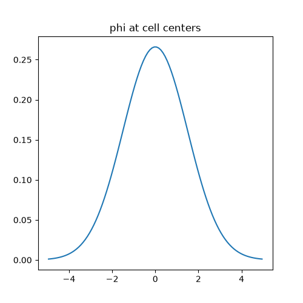
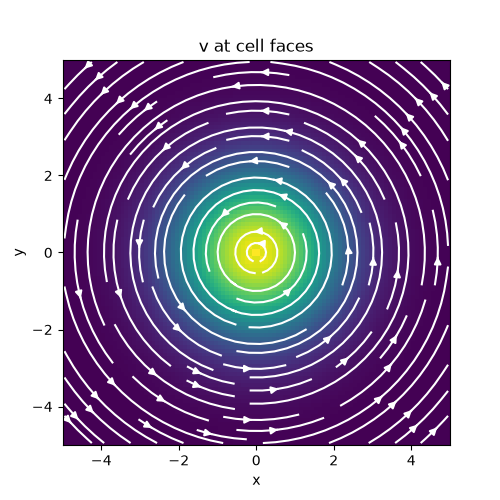

Note
Go to the end to download the full example code.
Basic Inner Products#
Inner products between two scalar or vector quantities represents the most basic class of inner products. For this class of inner products, we demonstrate:
How to construct the inner product matrix
How to use inner product matricies to approximate the inner product
How to construct the inverse of the inner product matrix.
For scalar quantities \(\psi\) and \(\phi\), the inner product is given by:
And for vector quantities \(\vec{u}\) and \(\vec{v}\), the inner product is given by:
In discretized form, we can approximate the aforementioned inner-products as:
and
where \(\mathbf{M}\) in either equation represents an inner-product matrix. \(\mathbf{\psi}\), \(\mathbf{\phi}\), \(\mathbf{u}\) and \(\mathbf{v}\) are discrete variables that live on the mesh. It is important to note a few things about the inner-product matrix in this case:
It depends on the dimensions and discretization of the mesh
It depends on where the discrete variables live; e.g. edges, faces, nodes, centers
For this simple class of inner products, the inner product matricies for discrete quantities living on various parts of the mesh have the form:
where \(k = 1,2,3\), \(\mathbf{I_k}\) is the identity matrix and \(\otimes\) is the kronecker product. \(\mathbf{P}\) are projection matricies that map quantities from one part of the cell (nodes, faces, edges) to cell centers.
Import Packages#
Here we import the packages required for this tutorial
from discretize.utils import sdiag
from discretize import TensorMesh
import matplotlib.pyplot as plt
import numpy as np
rng = np.random.default_rng(8572)
# sphinx_gallery_thumbnail_number = 2
Scalars#
It is natural for scalar quantities to live at cell centers or nodes. Here we will define a scalar function (a Gaussian distribution in this case):
We will then evaluate the following inner product:
according to the mid-point rule using inner-product matricies. Next we compare the numerical approximation of the inner product with the analytic solution. Note that the method for evaluating inner products here can be extended to variables in 2D and 3D.
# Define the Gaussian function
def fcn_gaussian(x, mu, sig):
return (1 / np.sqrt(2 * np.pi * sig**2)) * np.exp(-0.5 * (x - mu) ** 2 / sig**2)
# Create a tensor mesh that is sufficiently large
h = 0.1 * np.ones(100)
mesh = TensorMesh([h], "C")
# Define center point and standard deviation
mu = 0
sig = 1.5
# Evaluate at cell centers and nodes
phi_c = fcn_gaussian(mesh.gridCC, mu, sig)
phi_n = fcn_gaussian(mesh.gridN, mu, sig)
# Define inner-product matricies
Mc = sdiag(mesh.cell_volumes) # cell-centered
# Mn = mesh.getNodalInnerProduct() # on nodes (*functionality pending*)
# Compute the inner product
ipt = 1 / (2 * sig * np.sqrt(np.pi)) # true value of (f, f)
ipc = np.dot(phi_c, (Mc * phi_c))
# ipn = np.dot(phi_n, (Mn*phi_n)) (*functionality pending*)
fig = plt.figure(figsize=(5, 5))
ax = fig.add_subplot(111)
ax.plot(mesh.gridCC, phi_c)
ax.set_title("phi at cell centers")
# Verify accuracy
print("ACCURACY")
print("Analytic solution: ", ipt)
print("Cell-centered approx.:", ipc)
# print('Nodal approx.: ', ipn)

ACCURACY
Analytic solution: 0.18806319451591877
Cell-centered approx.: 0.18806274170655463
Vectors#
To preserve the natural boundary conditions for each cell, it is standard practice to define fields on cell edges and fluxes on cell faces. Here we will define a 2D vector quantity:
We will then evaluate the following inner product:
using inner-product matricies. Next we compare the numerical evaluation of the inner products with the analytic solution. Note that the method for evaluating inner products here can be extended to variables in 3D.
# Define components of the function
def fcn_x(xy, sig):
return (-xy[:, 1] / np.sqrt(np.sum(xy**2, axis=1))) * np.exp(
-0.5 * np.sum(xy**2, axis=1) / sig**2
)
def fcn_y(xy, sig):
return (xy[:, 0] / np.sqrt(np.sum(xy**2, axis=1))) * np.exp(
-0.5 * np.sum(xy**2, axis=1) / sig**2
)
# Create a tensor mesh that is sufficiently large
h = 0.1 * np.ones(100)
mesh = TensorMesh([h, h], "CC")
# Define center point and standard deviation
sig = 1.5
# Evaluate inner-product using edge-defined discrete variables
vx = fcn_x(mesh.gridEx, sig)
vy = fcn_y(mesh.gridEy, sig)
v = np.r_[vx, vy]
Me = mesh.get_edge_inner_product() # Edge inner product matrix
ipe = np.dot(v, Me * v)
# Evaluate inner-product using face-defined discrete variables
vx = fcn_x(mesh.gridFx, sig)
vy = fcn_y(mesh.gridFy, sig)
v = np.r_[vx, vy]
Mf = mesh.get_face_inner_product() # Edge inner product matrix
ipf = np.dot(v, Mf * v)
# The analytic solution of (v, v)
ipt = np.pi * sig**2
# Plot the vector function
fig = plt.figure(figsize=(5, 5))
ax = fig.add_subplot(111)
mesh.plot_image(
v, ax=ax, v_type="F", view="vec", stream_opts={"color": "w", "density": 1.0}
)
ax.set_title("v at cell faces")
fig.show()
# Verify accuracy
print("ACCURACY")
print("Analytic solution: ", ipt)
print("Edge variable approx.:", ipe)
print("Face variable approx.:", ipf)

ACCURACY
Analytic solution: 7.0685834705770345
Edge variable approx.: 7.057606391882359
Face variable approx.: 7.0794915919325305
Inverse of Inner Product Matricies#
The final discretized system using the finite volume method may contain the inverse of an inner-product matrix. Here we show how the inverse of the inner product matrix can be explicitly constructed. We validate its accuracy for cell-centers, nodes, edges and faces by computing the folling L2-norm for each:
# Create a tensor mesh
h = 0.1 * np.ones(100)
mesh = TensorMesh([h, h], "CC")
# Cell centered for scalar quantities
Mc = sdiag(mesh.cell_volumes)
Mc_inv = sdiag(1 / mesh.cell_volumes)
# Nodes for scalar quantities (*functionality pending*)
# Mn = mesh.getNodalInnerProduct()
# Mn_inv = mesh.getNodalInnerProduct(invert_matrix=True)
# Edges for vector quantities
Me = mesh.get_edge_inner_product()
Me_inv = mesh.get_edge_inner_product(invert_matrix=True)
# Faces for vector quantities
Mf = mesh.get_face_inner_product()
Mf_inv = mesh.get_face_inner_product(invert_matrix=True)
# Generate some random vectors
phi_c = rng.random(mesh.nC)
# phi_n = rng.random(mesh.nN)
vec_e = rng.random(mesh.nE)
vec_f = rng.random(mesh.nF)
# Generate some random vectors
norm_c = np.linalg.norm(phi_c - Mc_inv.dot(Mc.dot(phi_c)))
# norm_n = np.linalg.norm(phi_n - Mn_inv*Mn*phi_n)
norm_e = np.linalg.norm(vec_e - Me_inv * Me * vec_e)
norm_f = np.linalg.norm(vec_f - Mf_inv * Mf * vec_f)
# Verify accuracy
print("ACCURACY")
print("Norm for centers:", norm_c)
# print('Norm for nodes: ', norm_n)
print("Norm for edges: ", norm_e)
print("Norm for faces: ", norm_f)
ACCURACY
Norm for centers: 4.8433868564087776e-15
Norm for edges: 0.0
Norm for faces: 0.0
Total running time of the script: (0 minutes 0.307 seconds)